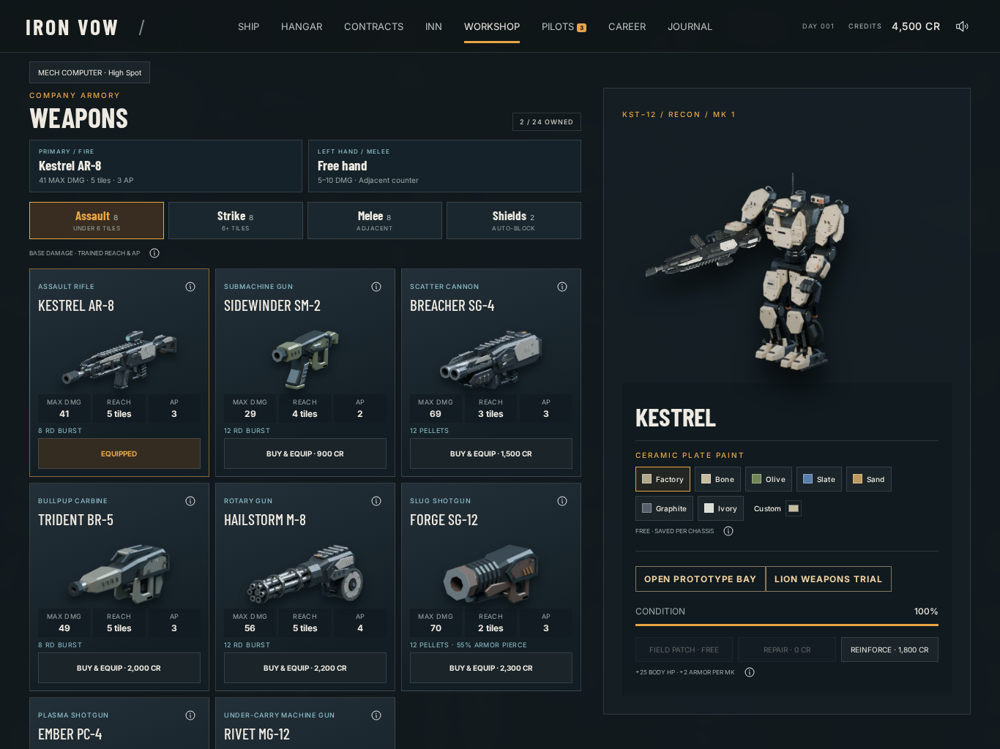

Actual Workshop/Assigned/Kestrel controls and scroll. Native render-target preview draws/readbacks preserved; one1366x1024DPR1 full-resolution screenshot. Deterministic paused clock only; no game state/RNG modifications or performance claim.
Source fa9f83576f75878c85afc5eb4c4b9467157c0675
